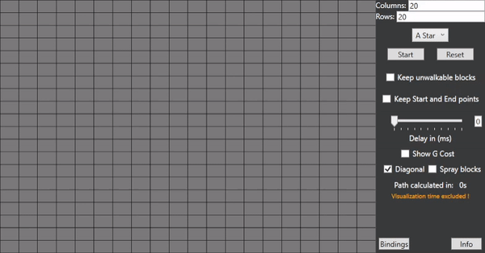
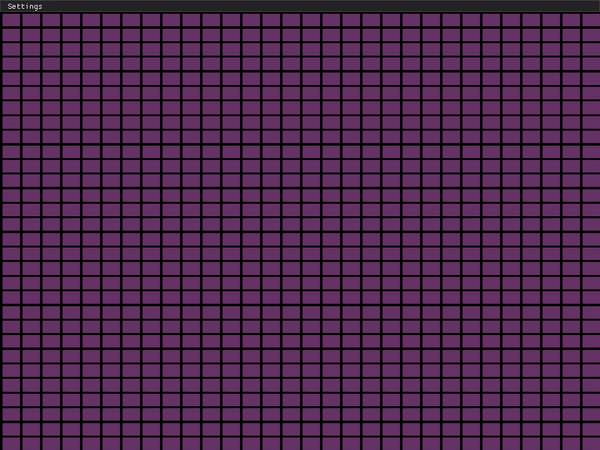

A projekt pathfinding vagy útvonalkereső algoritmusokra épül, megtalálható A*, Dijkstra, Depth first, Breadth first.
Kezdetben .NET WPF-ben MVVM logika felhasználásával készült és teljes értékűnek, befejezettnek is gondolom, de rengeteg változtatásra szorul (hogy miért nem frissítem, később kifejtem).
A projekt itt található.

A projekt folyamán és befejezése után rengeteg problémával/hibával szembesültem.
Az első, hogy kifejezetten olyan komponensek/controllok nincsenek beépítve, amivel a kívánt GUI-t elérhettem volna.
Tehát egy szinttel lejjebb kellet menjek és alapvető geometriai alakzatokat kellett használnom.
Egy másik nagyon fontos szempont, hogy MVVM logikát nem ilyen projektekhez találták ki.
Ugyebár ICommandokat használ a program, ami eleve lassabb, mint az eventek, evvel nem is lenne probléma, ha nem lenne másodpercenként akár többször is meghívva ugyan az az event.
Ezen problémák beazonosítása után, arra a konklúzióra jutottam, hogy majdnem az egész GUI struktúrát újra kell írni, viszont úgy gondoltam ennyi erővel akár még alacsonyabb szintre is mehetnék, hiszen ahogy korábban említettem alapvető geometriai alakzatokkal dolgozom.
Korábban már találkoztam a grafikus programozással, de még komolyan sose próbáltam őket.
Több lehetőség közül is választhattam: CUDA, Vulkan, OpenGL, DirectX. Vulkan-ról azt gondoltam nehezebb, mint a többi (ez egyébként nem igaz), ezért azt elvetettem.
CUDA csak NVIDIA kártyákon működik, ez számomra egy kizáró ok hiszen nem elég nagyszabású a projekt, hogy érezhető legyen a teljesítménybeli különbség NVIDIA oldalon.
DirectX hasonlóan CUDA-hoz csak Windows-on elérhető, így hát maradt az OpenGL.
OpenGL elérhető C# nyelven OpenTK néven, de már egy ideje meg szerettem volna tanulni C++ -ban programozni.
Pathfinding algoritmus kódokat nem akartam újraírni, ezért mint scripting language-et beleintegráltam a megírt C# kódot Mono segítségével.
A projekt itt található.
